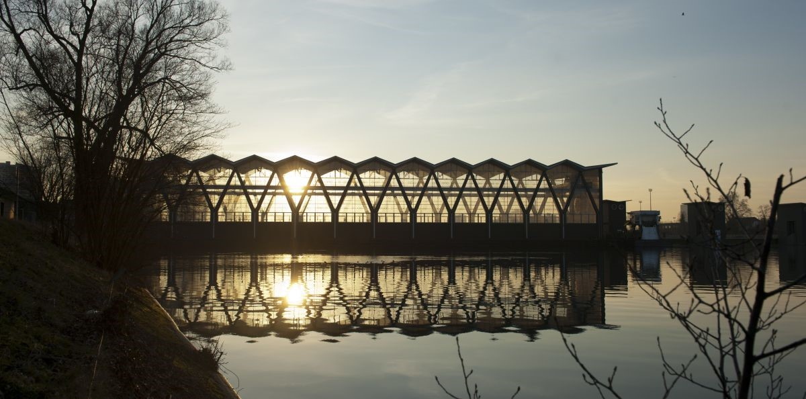
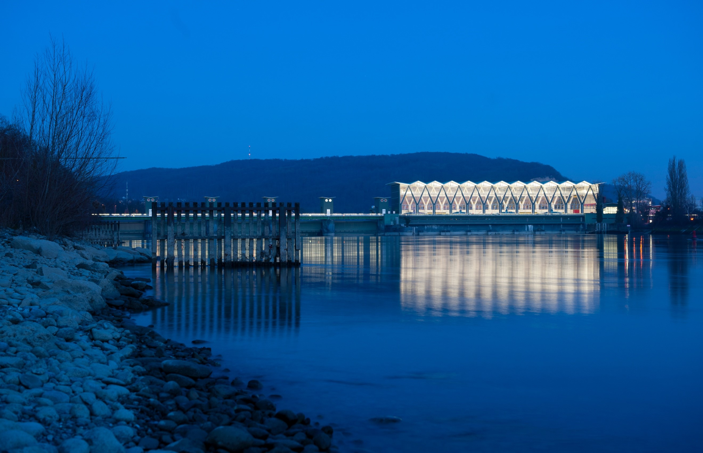

Ja, es gibt auch theologische Erinnerungsorte. Es muss sie geben,
nachdem Erinnerungsorte an sich zu einer überaus erfolgreichen Formel
zur Bezeichnung des Phänomens geworden sind, dass es symbolisch
aufgeladene Bezugspunkte des gemeinsamen Gedenkens oder des von Gruppen
praktizierten Denkens und Fühlens gibt.
Auch im Falle der
theologischen Erinnerungsorte kann man versucht sein zwei Typen zu
unterscheiden: solche, die zum Zweck des gemeinsamen Gedenkens
geschaffen worden sind (all die Kirchen in der bereits bestehenden
Liste), und solche, die sich scheinbar ergeben haben (auf der Liste am
ehesten der Gnadenbrunnen im luzernischen Luthernbad), letztlich aber
doch auch – wie alle Erinnerungsorte – gemacht worden sind. Klassische
Erinnerungsorte theologischer Natur sind Orte, die von Angehörigen der
gleichen Glaubensgemeinde aufgesucht und genutzt werden (die Schwarze
Madonna von Einsiedeln zum Beispiel als eingeführter Bezugspunkt eines
gegebenen Glaubens). Teilhabe an Gemeinsamem ist eine wichtige Dimension
der Religiosität.
Persönlicher Erinnerungsort
Kraftwerk Birsfelden (1950–1954) von Hans Hofmann – ein Kraftort zu jeder Tages- und Nachtzeit. (Bild: IWB, Christian Flierl)
Dennoch kann es sehr persönliche und individuelle Erinnerungsorte des
Glaubens geben, bloss ein bestimmter Baum oder eben ein Kraftwerk – als
dritter Typ also ein individuell geschaffener theologischer
Erinnerungsort. Er hat nicht die Eigenschaft, als bekannter Ort «mit
anderen Augen» gesehen zu werden, er ist vielmehr ein wenig bekannter,
aber doch auffallender Ort, der einmal in den Blick genommen, wieder und
wieder als Erinnerungsort zur Verfügung steht.
Zum Beispiel das Rhein-Kraftwerk Birsfelden. Dieser Ort ist nicht als
Erinnerungsort gemacht worden, er ist in den Jahren 1951–1954 geschaffen
worden, um Elektrizität herzustellen. Er ist ein Zweckbau, jedoch von
vorzüglicher architektonischer Qualität, die besonders im abendlichen
Gegenlicht und nachts zur Geltung kommt. Entworfen hat ihn der Architekt
Hans Hofmann, der von 1942 bis 1947 Gutachter und Vertrauensmann der
Schweizerischen Vereinigung für Heimatschutz war.
Kraftwerk als Kraftort
Kraftwerk Birsfelden (1950–1954) von Hans Hofmann – ein Kraftort zu jeder Tages- und Nachtzeit. (Bild: IWB, Christian Flierl)
Das Elektrizitätswerk ist primär im physikalischen-materiellen Sinn ein Kraftort, weil er als Niederdruck-Laufkraftwerk Energie erzeugt, die in durchschnittlichen Jahresleistungen von so und so viel Gigawatt ausgedrückt werden kann. Ein solches Kraftwerk ist Menschenwerk in positivem Sinn, ist vom Homo faber fabriziertes Werk zur nachhaltigen Naturnutzung und Teil der grösseren Schöpfung. Der Kraftwerk-Begriff ist auch in die nicht ohne etwas Strom auskommende Musikszene übergeschwappt: 1970 entstand im Düsseldorfer Kling-Klang-Studio das Elektropop-Projekt Kraftwerk. Das Kraftwerk Birsfelden kann auch im emotionalen-spirituellen Sinn ein Kraftwerk sein. Denn was wir da sehen, kann uns daran erinnern, dass es etwas ausserhalb von uns gibt, das wir in unserem Innern spüren: die Sturzfluten des überschüssigen Oberwassers und im Unterwasser die wilden Wirbel, die das genutzte und von unten wieder eingeleitete Wasser erzeugt.
Plötzlich diese Agnostik
Wenn ich in dieses Wasser schaue und mir Rechenschaft ablege, was sich über die reine Wahrnehmung meldet, dann könnte, sofern vorhanden, Glauben an etwas Grösseres aufkommen, vielleicht in Form einer vorformulierten Confessio (Bekenntnis), vielleicht aber auch nur als ein diffuses, agnostisches Gefühl. Agnostik, so habe ich mich beim Redigieren dieser Zeilen nochmals versichert, ist eigentlich eine Art wissendes Nichtwissen, gnostikos bedeutet erkenntnisfähig und das davorgestellte a bedeutet das Gegenteil davon. Agnostik räumt ein, dass es Göttliches (Transzendenz) geben kann, auch wenn es nicht beweisbar ist. Mit dem Blick ins bewegte Wasser kommt kurz ein Fragen nach Unbeantwortbarem auf und verschwindet wieder, während andere gar nicht stehen bleiben und weitergehen oder weiterfahren. Und die Frage? Es ist die Frage, ob man Teil eines Universums ist und, wenn ja, welche Konsequenzen dies für die Gestaltung des eigenen Lebens haben soll. Mit Theologie hat das allerdings wenig zu tun. Denn diese wolkige Transzendenzahnung hat nicht die Qualität einer göttlichen Lehre und kann darum auch nicht Basis einer wissenschaftlichen Auseinandersetzung sein.
Nur ein Beispiel
Die klassischen theologischen Erinnerungsorte mögen in ihrer konkreten
Ausprägung eine gewisse Individualität haben, sollten jedoch grosso modo
gleichem Erinnerungsgut gelten. Das individuell zum Erinnerungsort
erhobene Kraftwerk Birsfelden ist kein einmaliger Erinnerungsort.
Andere, ähnliche Orte könnten Betrachtungsgegenstand gleicher Art sein,
zum Beispiel die Stau- und Kraftwerke von Mägd und Kembs, bei denen ich
auf meinen Velofahrten ebenfalls immer wieder vorbeikomme und
besinnliche Zwischenhalte einschalte, mit Blicken ins tosende Wasser,
aber auch auf die Enten, die auf der Stauseite seelenruhig ihre Runden
drehen. Mägd und Kembs gehören zwar wie Birsfelden zum nahen Basler
Umfeld, sie liegen aber im so genannten Ausland.
Alle diese Kraftwerke haben eine Doppelfunktion: Sie erzeugen mit ihren
Turbinen Energie, sie sind in der Regel aber auch Brücken. Und Brücken
können ebenfalls Erinnerungsorte sein. Da habe ich, von anderen
Velofahrten, zwei spezielle Brücken in Erinnerung: diejenige von Dornach
und diejenige von St. Ursanne. Beide sind mit dem Heiligen Johannes
Nepomuk, einem Heiligen aus dem späten 14. Jahrhundert, ausgestattet,
also mit einer klassischen Erinnerungsfigur, die uns gemäss der
zugehörigen Legende daran erinnert, dass man ohne Rücksicht auf das
eigene Leben dafür einstehen muss, was das Gewissen uns heisst.
Wilder Wirbel, nachdem sich das genutzte Oberwasser wieder mit dem Unterwasser vereinigt. (Bild: Georg Kreis)
Prof. em. Dr. Georg Kreis war bis 2010 Ordinarius für Neuere Allgemeine Geschichte und Schweizergeschichte an der Universität Basel und Hauptredaktor der Schweizerischen Zeitschrift für Geschichte. Von 1993-2011 war er Leiter des interdisziplinären Europainstituts in Basel und Präsident der Eidgenössischen Kommission gegen Rassismus (EKR).
Weitere Artikel von {{ author.author }} finden Sie hier:
- {{ author.location[i] }}: {{ author.fulltitle[i] }} {{ beitrag }}
Zur Vertiefung:
- Kreis, Georg: Schweizerische Erinnerungsorte. Aus dem Speicher der Swissness. Zürich NZZ-Libro März 2010. Mit einem Kapitel über Einsiedeln und die Schwarze Madonna, S. 59-70.
- Markschies, Christoph / Wolf, Hubert (Hgg.), Erinnerungsorte des Christentums, München 2010.
- Bärtschi, Hans-Peter: Industriekultur beider Basel. Unterwegs zu 333 Schauplätzen des produktiven Schaffens, Zürich 2014. S. 30.